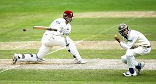

CRICKET

Watch Out All Die Hard Cricket Fans! This is for you.
All cricket news, updates and stats at your click.
Live Scores
You can check live scores of matches of all three formats of the game Click to view Upcoming Matches
You can view details of upcoming matches and series going to be held between all cricket playing nations.
All the three formats of the game have been covered.
You can check out venue , date , timings etc. Click to view Recently Concluded
You can view details of recently concluded matches and series of all cricket playing nations.
All the three formats of the game have been covered.
You can check out results , victory margins in terms of runs and wickets etc. Click to view News
You can check out latest cricket news and results of concluded.
You can also read interviews of some pupular cricketers , sports analysts , jouranalists etc.Click to viewSearch Stats
You can search for a plethora of ODI and Test match records and statistics covering all cricket playing nations.
Records of all the aspects of the game have been covered Click to view